PROPUESTA · sin integrar · Lucas elige. Misma A, tres ejecuciones por piedra. Recomendación: 02 en ambas. Leer el informe y los límites de las pruebas.
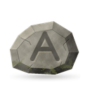
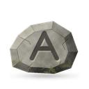
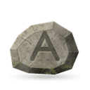
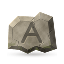
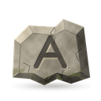
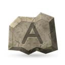
Abrí las hojas al 100 % para evaluar los 34 px.
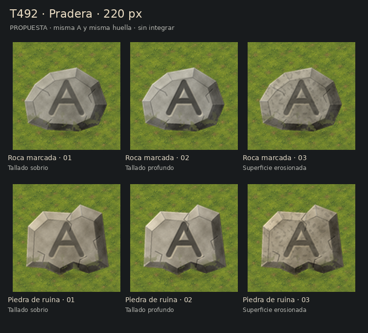
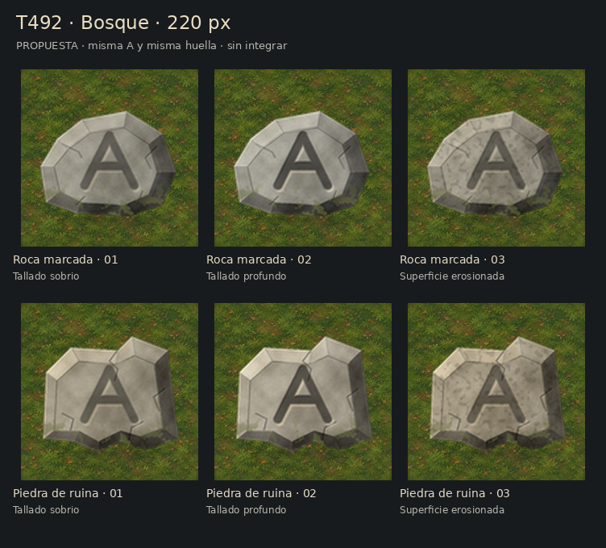
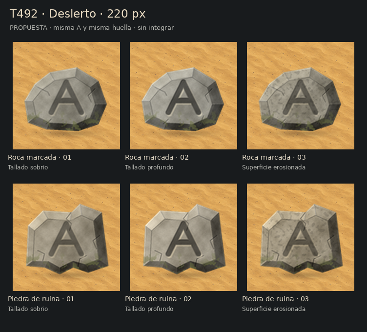
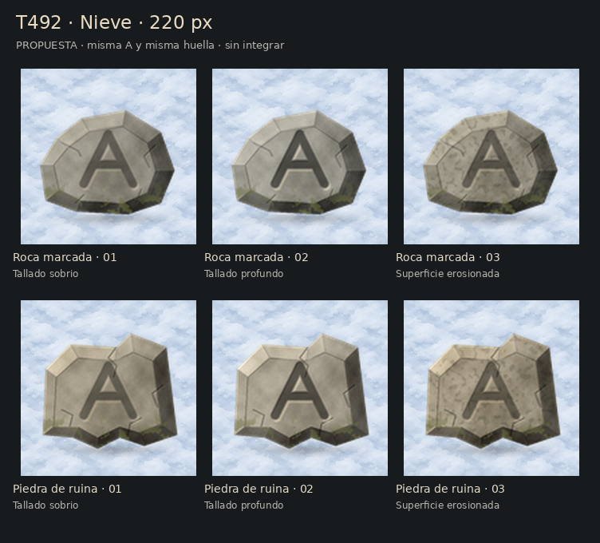
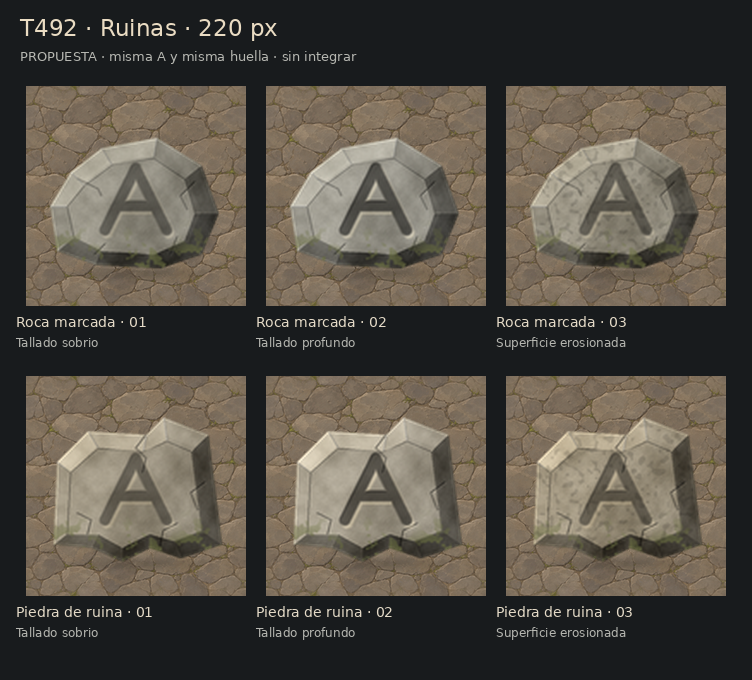
La superposición literal tapa la A. El código vigente directamente omite la señal bajo el poste. Los mapas con poste reproducen esa omisión; son ensayos hipotéticos porque hoy no hay poste habilitado en esa casilla.
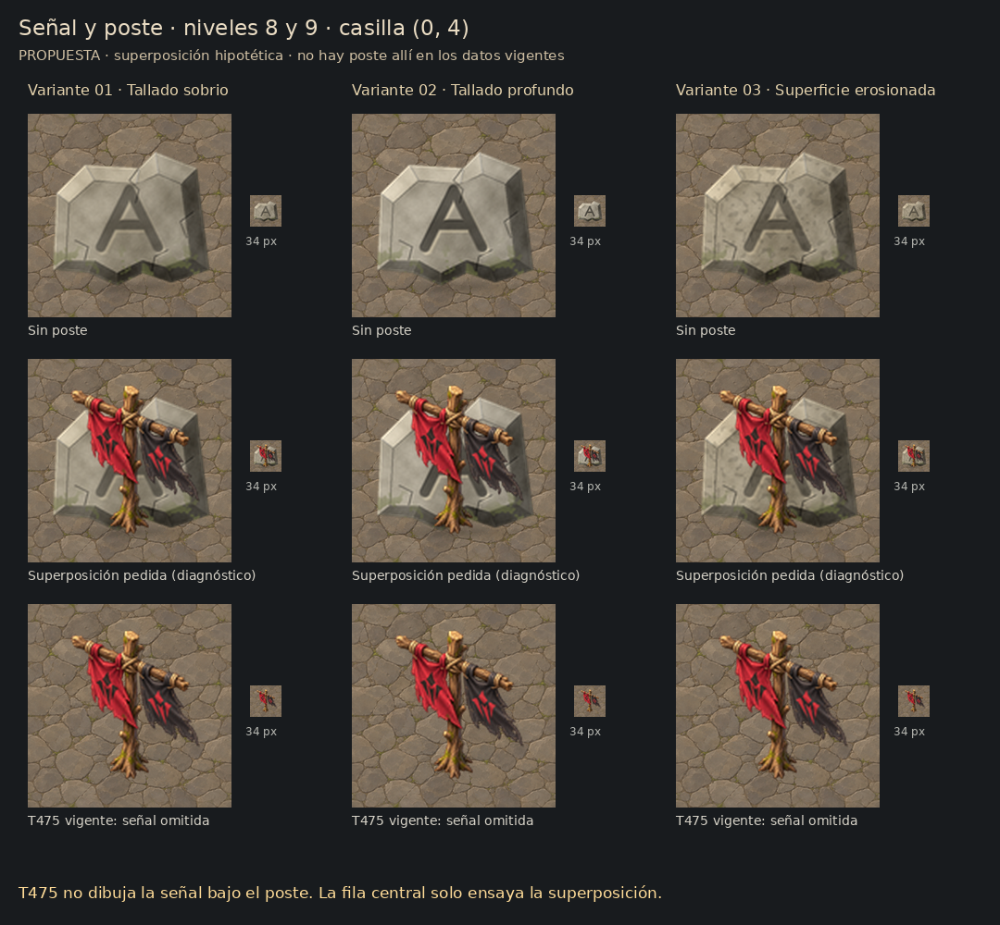
Montajes a 1280×720; no se corrió el motor con estas piezas.
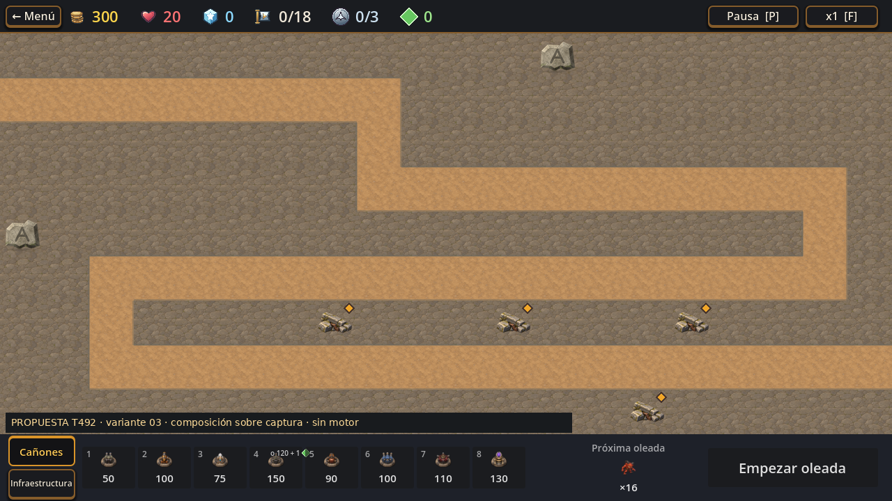
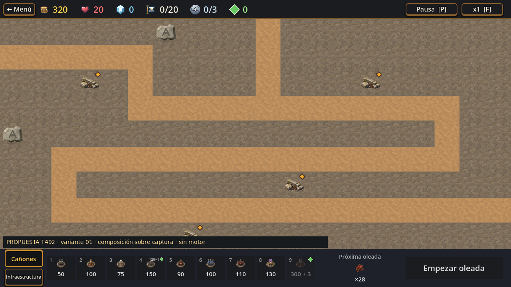
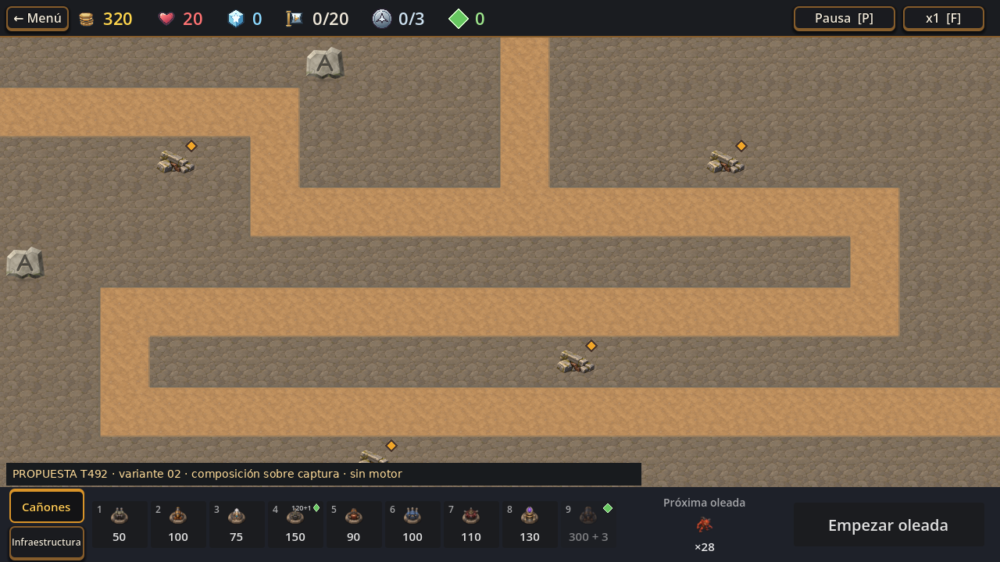
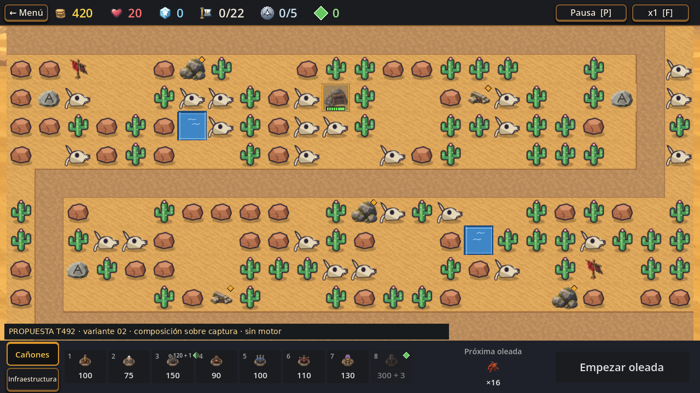
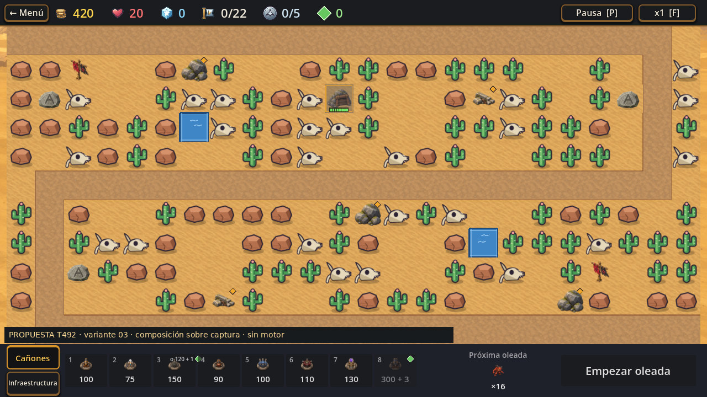